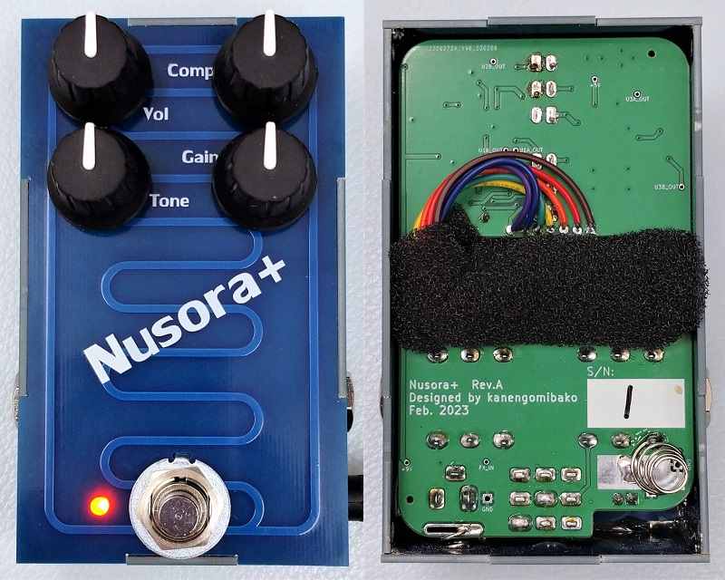
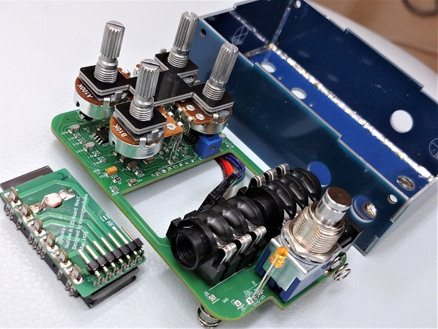
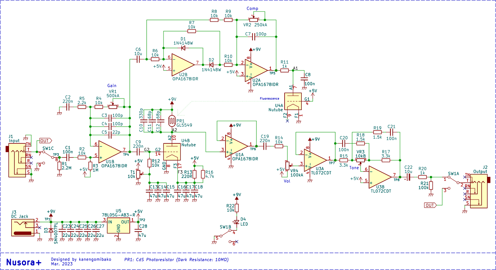
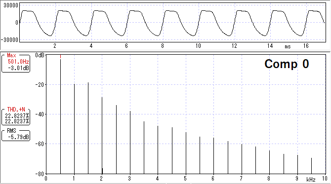
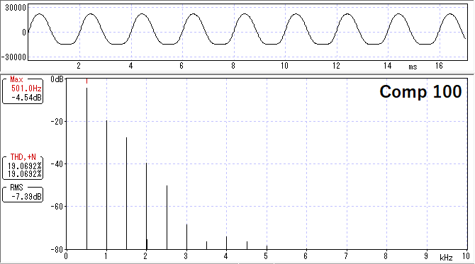
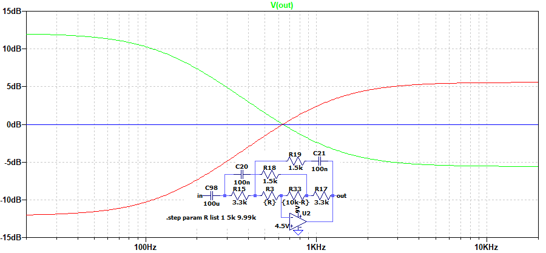

Nusora+
2023年03月24日 カテゴリー：自作エフェクター（アナログ）

Nutube自作エフェクターコンテストで最優秀賞となったNusoraを、一般販売に向けてリニューアルしたものです（→販売ページはこちら）。いろいろな種類のギターに対応したり、個体差を調整したりする目的でコントロールを増やしてあります。名前は安直ですがNusora+（ニュソラプラス）としました。KiCadデータはGitHubにあります。
販売を考える上で重要になるのが、価格や製造効率です。特にケースは塗装や穴あけが大変で、外注だとコストがかかります。そこで今回は、基板を組み合わせた筐体を採用しました。組み立てて半田付けするのはやや手間がかかりますが、穴あけ・塗装・シルク印刷済のものが低価格で手に入るのは大きなメリットです。内部が一面銅箔なので、ノイズ面でも問題ありません。意外と強度もあり、思いっきり踏んでも大丈夫でした。
筐体は基板を組み立てたものにしてみようと思います。壊すつもりで激しく踏んでみましたが大丈夫でした。
— 可燃ごみ箱 (@kanengomibako) February 2, 2023
組み立てはやや大変ですが、塗装・穴あけ済のケースが低コストで手に入るのは大きいです。 pic.twitter.com/cnv4up30AV
線材の被膜を剥いて半田付けするのもなかなか大変な作業なので、スイッチやジャック類は基板直付けです。ポットもできれば端子が長いタイプを直付けしたい所ですが、入手性・価格面を考え秋月電子で購入したポットにリード線を付けて使用しています。

Nutubeについてはマイクロフォニックノイズ対策のため線材で接続し、緩衝材のスポンジで包みます。
メインの基板はJLCPCBの部品実装サービス（PCBA）を利用しました（参考ページ→JLCPCB KiCadプラグインで簡単基板発注）。部品はJLCPCBのパーツライブラリから選びますが、BasicパーツとExtendedパーツに分類されています。Basicパーツだと、実装に追加費用がかからず安く済むということになります。
▽回路図

基本的にはコンテスト最優秀賞記念モデルということで、Nusoraと同じ音が出せるようにしています。Compトリマーを外部ポットにし、Toneコントロールを追加してあるだけで、ほぼ定数は変えていません。コンデンサがやたらと並列になっている所は、できるだけJLCPCBのBasicパーツを使うための措置です。
・Compコントロール

Comp 0% → 100%での波形変化を見てみると、音量や歪み方が変化していることがわかります。しかしながら実際に弾くとそこまで大きく変化する感じではなかったので、あくまでも微調整と考えてもらう方がいいかと思います。
・Toneコントロール

エフェクターに採用されることは少ない、チルト・イコライザと呼ばれる回路を使ってみました。少し高音域側の変化量が少ない設計です。低音域と高音域が同時に調整されるので、BOSS DS-1やビッグマフのトーン回路に似た感覚となっています。
Limetone Audio 今西さんのコンテストレポートにてNusoraの音を聞くことができます。